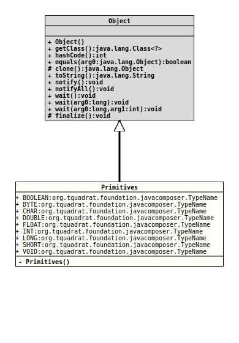

Class Primitives
java.lang.Object
org.tquadrat.foundation.javacomposer.Primitives
@UtilityClass
@ClassVersion(sourceVersion="$Id: Primitives.java 943 2021-12-21 01:34:32Z tquadrat $")
@API(status=STABLE,
since="0.0.5")
public final class Primitives
extends Object
The constants for the primitives.
- Author:
- Thomas Thrien (thomas.thrien@tquadrat.org)
- Version:
- $Id: Primitives.java 943 2021-12-21 01:34:32Z tquadrat $
- Since:
- 0.0.5
- See Also:
- UML Diagram
-

UML Diagram for "org.tquadrat.foundation.javacomposer.Primitives"
{kind=link}
-
Field Summary
FieldsModifier and TypeFieldDescriptionstatic final TypeNameThe type name forboolean.static final TypeNameThe type name forbyte.static final TypeNameThe type name forchar.static final TypeNameThe type name fordouble.static final TypeNameThe type name forfloat.static final TypeNameThe type name forint.static final TypeNameThe type name forlong.static final TypeNameThe type name forshort.static final TypeNameThe type name forvoid. -
Constructor Summary
Constructors -
Method Summary
-
Field Details
-
BOOLEAN
The type name forboolean. -
BYTE
The type name forbyte. -
CHAR
The type name forchar. -
DOUBLE
The type name fordouble. -
FLOAT
The type name forfloat. -
INT
The type name forint. -
LONG
The type name forlong. -
SHORT
The type name forshort. -
VOID
The type name forvoid.
-
-
Constructor Details
-
Primitives
private Primitives()No instance allowed for this class.
-